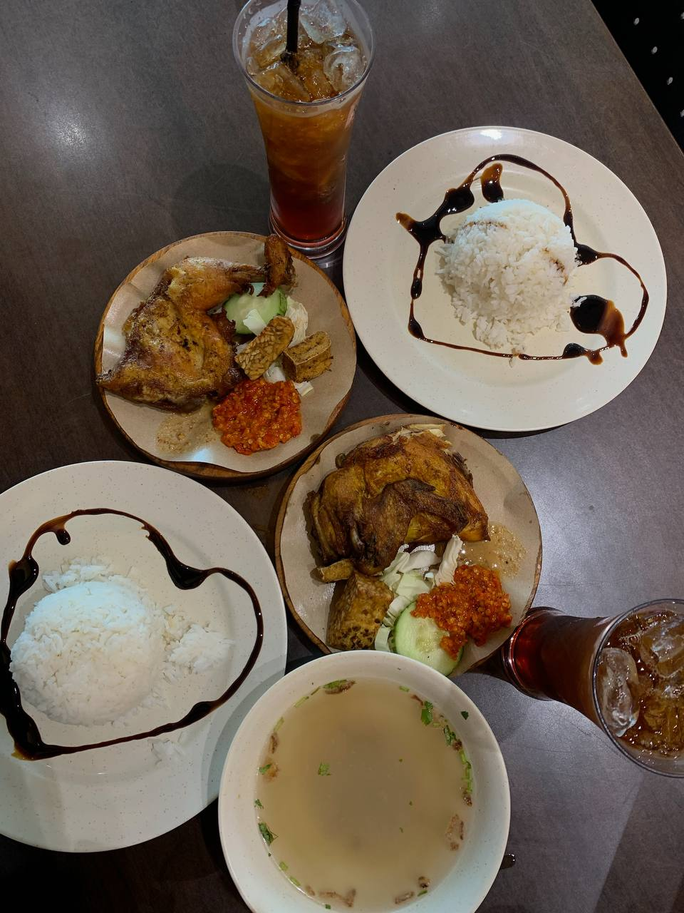
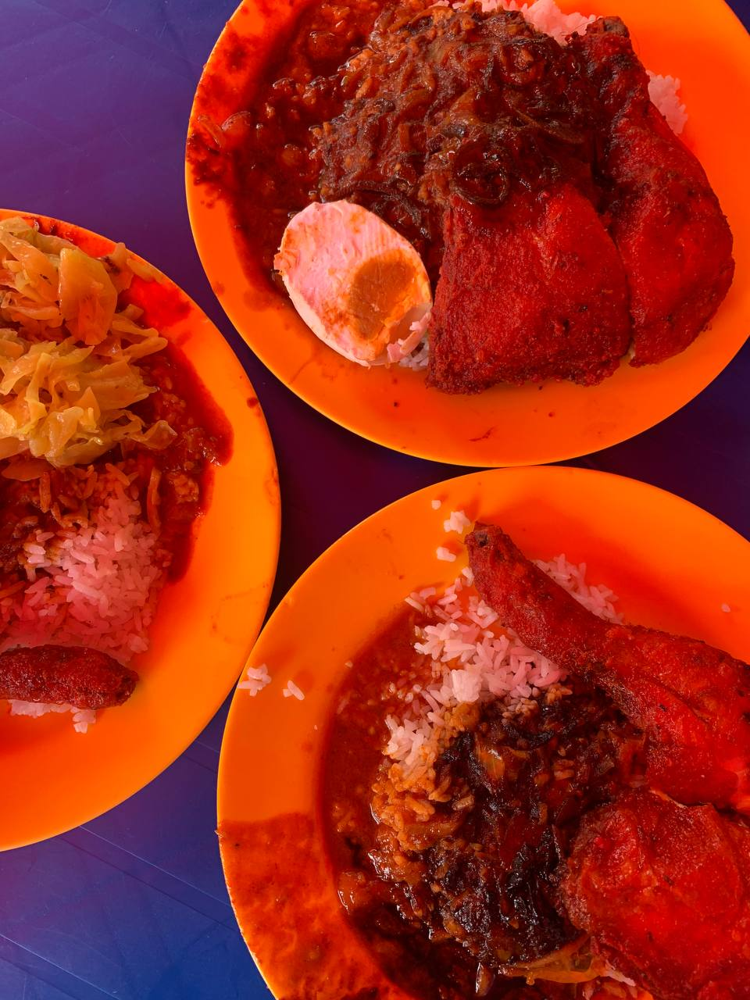
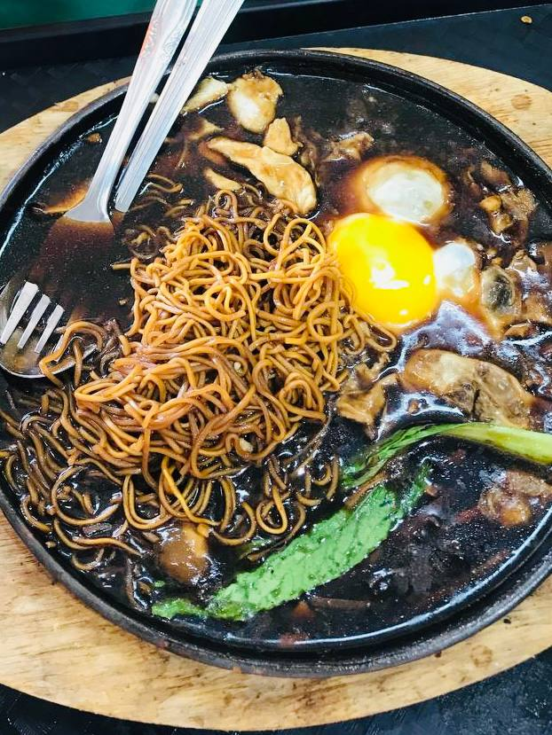
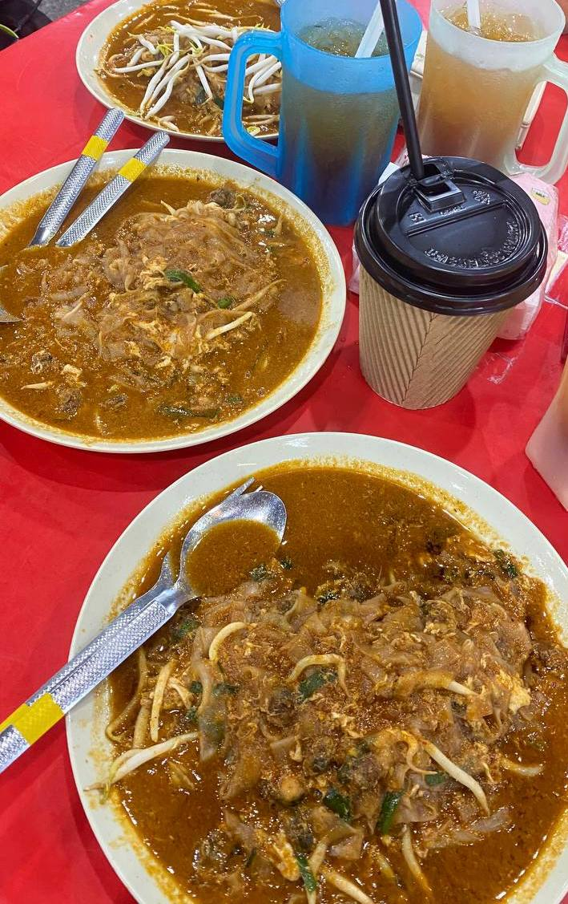
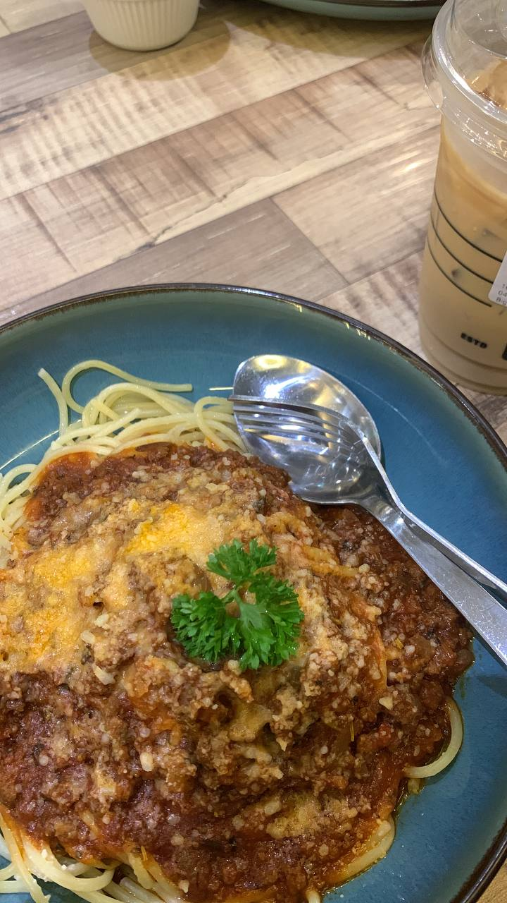
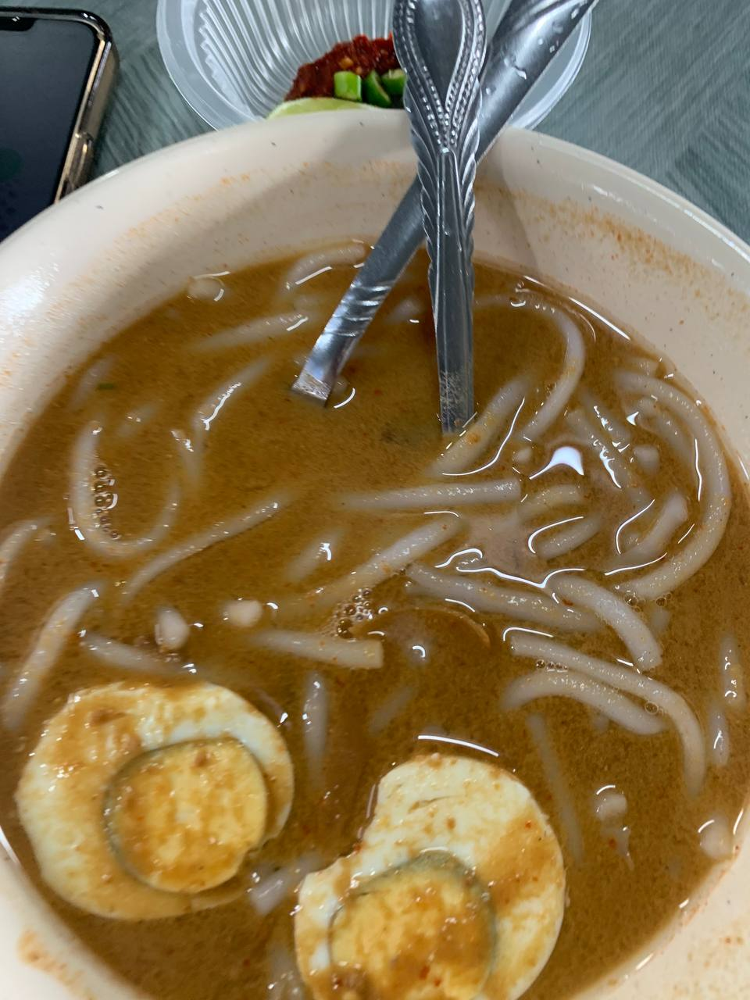

Food is one of the happiest parts of my life. Every dish carries its own memory and comfort.
Here are some of my favourite foods that I truly enjoy.

Nasi Ayam Gepuk 🍗
I absolutely love this dish because of its crispy fried chicken combined with spicy sambal that gives a strong kick of flavour.
The balance between savoury and spicy makes it very addictive.

Nasi Kandar 🍛
Nasi Kandar is one of my all-time comfort foods because of its rich curry and variety of side dishes.
Mixing different gravies creates a unique flavour.

Mee Sizzling 🍜
What makes this dish special is the sizzling hot plate when it is served.
The thick gravy and noodles blend perfectly.

Char Koey Teow 🍤
I really love the smoky flavour of Char Koey Teow that comes from cooking it over high heat.
It creates a rich and satisfying taste.

Spaghetti Bolognese 🍝
This is my favourite western dish because of its rich tomato sauce and minced meat.
It is simple, comforting, and delicious.

Laksa 🍜
Laksa has a unique tangy and spicy flavour that makes it one of the most unforgettable Malaysian dishes for me.